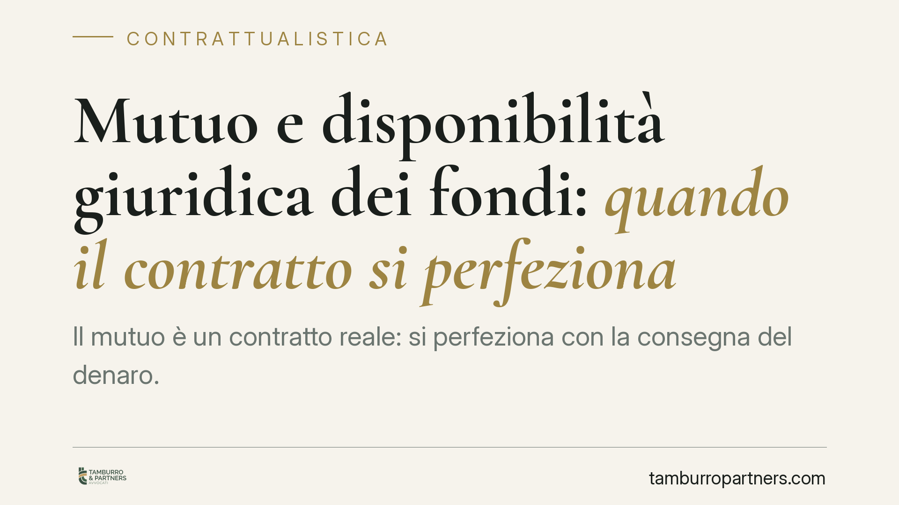

Mutuo e disponibilità giuridica dei fondi: quando il contratto si perfeziona
Il mutuo è un contratto reale: si perfeziona con la consegna del denaro. Ma cosa significa "consegna" quando le somme transitano su conti e scritture contabili? La giurisprudenza ammette la disponibilità giuridica dell'importo, con riflessi diretti sulla validità del contratto e sul titolo esecutivo. Il tema resta dibattuto e merita attenzione per istituti di credito e mutuatari.

Il punto di partenza: il mutuo come contratto reale
L'art. 1813 del Codice civile definisce il mutuo come il contratto con cui una parte consegna all'altra una somma di denaro (o altre cose fungibili) e l'altra si obbliga a restituirne altrettante della stessa specie e qualità.
La parola chiave è "consegna". Il mutuo è tradizionalmente qualificato come contratto reale: non si perfeziona con il solo consenso delle parti, ma richiede la dazione effettiva del denaro. Senza consegna, il contratto non viene ad esistenza.
Questo schema, pensato per la consegna materiale di banconote, convive oggi con operazioni che si svolgono interamente in forma contabile. Da qui la questione pratica: quando le somme non passano "di mano" ma vengono accreditate, girocontate o rese disponibili su un conto, il mutuo è perfezionato?
Consegna materiale e disponibilità giuridica
La giurisprudenza di legittimità ha chiarito da tempo che la "consegna" richiesta dall'art. 1813 c.c. va intesa in senso ampio. Non occorre la traditio fisica del contante: è sufficiente che il mutuatario acquisisca la disponibilità giuridica della somma, cioè il potere di disporne.
Rientrano in questa nozione l'accredito su conto corrente, il giroconto e, più in generale, ogni meccanismo che pone le somme nella sfera di controllo del mutuatario. In tal senso si sono espresse pronunce della Cassazione (orientamento riconducibile, tra le altre, alla sezione I in materia bancaria; estremi specifici da verificare caso per caso).
Attenzione, però, a non forzare la lettura. Il mutuo resta un contratto reale: non diventa consensuale. Ciò che la giurisprudenza amplia è il contenuto della consegna, non la sua necessità. La disponibilità giuridica sostituisce la consegna materiale, ma la dazione – in una delle sue forme – continua a essere requisito di perfezionamento.
Su questa linea si collocherebbe anche una recente pronuncia della Corte d'Appello di Firenze, i cui estremi (numero, anno e sezione) sono in corso di verifica e che pertanto non va trattata come orientamento consolidato. Il principio, in ogni caso, è coerente con l'indirizzo di legittimità.
Mutuo semplice e mutuo condizionato
Un passaggio delicato riguarda la distinzione tra mutuo già perfezionato e mutuo condizionato.
In alcune operazioni le somme vengono accreditate ma restano "bloccate" su un conto vincolato, svincolabili solo al verificarsi di determinati eventi (ad esempio l'iscrizione ipotecaria o il consolidamento della garanzia). In questi casi occorre valutare se il mutuatario abbia davvero acquisito la disponibilità giuridica dell'importo, oppure se si tratti di una mera annotazione contabile priva di effetto traslativo.
La differenza non è teorica. Dalla qualificazione dipende se il contratto costituisca titolo esecutivo – cioè documento che consente alla banca di agire direttamente in esecuzione forzata senza prima ottenere una sentenza – e da quale momento decorrano gli obblighi restitutori.
Implicazioni pratiche
Per gli istituti di credito, la corretta documentazione dell'erogazione è decisiva: il fascicolo deve dimostrare che la somma è stata resa effettivamente disponibile, non solo contabilizzata.
Per i mutuatari e i consumatori, la presenza di clausole di svincolo o di accredito su conti vincolati può incidere sulla validità del contratto e sulla sua azionabilità. Contestare il perfezionamento del mutuo, o la sua idoneità come titolo esecutivo, richiede una lettura puntuale delle clausole e delle movimentazioni contabili.
Cosa fare in concreto
- Verifica la forma dell'erogazione: accertati se le somme sono state accreditate su un conto liberamente disponibile oppure su un conto vincolato.
- Ricostruisci le movimentazioni contabili: raccogli estratti conto, contabili di accredito ed eventuali ordini di giroconto che documentino la disponibilità delle somme.
- Individua le clausole di svincolo: leggi con attenzione le condizioni che subordinano l'uso del denaro al verificarsi di eventi (iscrizione ipotecaria, consolidamento garanzie).
- Valuta l'idoneità a titolo esecutivo: distingui tra mutuo già perfezionato e mutuo condizionato prima di avviare o resistere a un'azione.
- È opportuno un esame tecnico del contratto per qualificarne la natura – reale o condizionata – e per misurarne gli effetti sul piano esecutivo.
Un orientamento in evoluzione
La nozione ampia di consegna consente al mutuo di adattarsi alle modalità operative dell'attività bancaria. Resta però un terreno in cui la distinzione tra disponibilità effettiva e mera annotazione contabile continua a generare contenzioso. La qualificazione del singolo contratto dipende dai fatti e dalle clausole, più che da formule astratte.
Contributo informativo a cura di Tamburro & Partners Avvocati. Non costituisce parere legale.
Ogni contratto ha il suo equilibrio.
Se vuoi una revisione delle clausole o una redazione su misura, scrivi allo studio. Ti rispondiamo entro un giorno lavorativo.